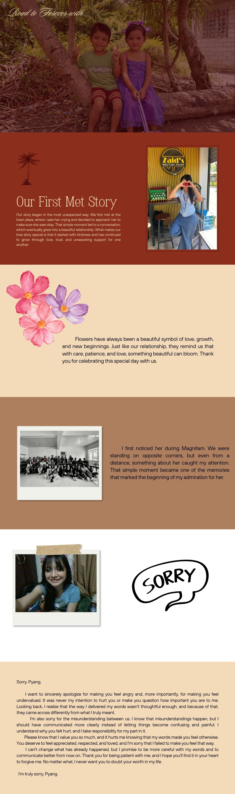

Our story began in the most unexpected way. We first met at the town plaza, where I saw her crying and decided to approach her to make sure she was okay. That simple moment led to a conversation, which eventually grew into a beautiful relationship. What makes our love story special is that it started with kindness and has continued to grow through love, trust, and unwavering support for one another.
Flowers have always been a beautiful symbol of love, growth, and new beginnings. Just like our relationship, they remind us that with care, patience, and love, something beautiful can bloom. Thank you for celebrating this special day with us.
I first noticed her during Magnifam. We were standing on opposite corners, but even from a distance, something about her caught my attention. That simple moment became one of the memories that marked the beginning of my admiration for her.
Sorry, Pyang,
I want to sincerely apologize for making you feel angry and, more importantly, for making you feel undervalued. It was never my intention to hurt you or make you question how important you are to me. Looking back, I realize that the way I delivered my words wasn't thoughtful enough, and because of that, they came across differently from what I truly meant.
I'm also sorry for the misunderstanding between us. I know that misunderstandings happen, but I should have communicated more clearly instead of letting things become confusing and painful. I should have been more sensitive to your feelings, and I take responsibility for my part in it.
Please know that I value you so much, and it hurts me knowing that my words made you feel otherwise. You deserve to feel appreciated, respected, and loved, and I'm sorry that I failed to make you feel that way.
I can't change what has already happened, but I promise to be more careful with my words and to communicate better from now on. Thank you for being patient with me, and I hope you'll find it in your heart to forgive me. No matter what, I never want you to doubt your worth in my life.
I'm truly sorry, Pyang.